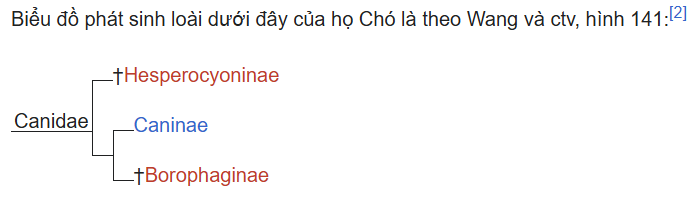

Họ Chó (Canidae) (/ kænɪdiː /; từ tiếng Latin, canis, nghĩa là "chó") là một họ thuộc Bộ Ăn thịt trong lớp động vật có vú. Họ này bao gồm các loài như chó, sói, cáo, sói đồng cỏ và chó rừng. Tất cả các loài động vật này đều đi bằng đầu ngón chân của chúng, chúng đều có mõm dài, tai nhọn, nanh sắc, khứu giác nhạy, thân hình thon thả và nhanh nhẹn.
Lưu ý rằng việc phân chia họ Canidae thành "cáo thực thụ" (tông Vulpini) và "chó thực thụ" (tông Canini) có thể không phù hợp với các quan hệ thực tế và việc phân loại theo đơn vị phân loại của một vài loài cáo, chó hiện còn gây tranh cãi. Tuy nhiên, phân tích DNA gần đây chỉ ra rằng Canini và Vulpini là các nhánh hợp lệ, nhưng loại trừ hai chi: Nyctereutes và Otocyon. Đây là các loài thuộc nhóm cơ sở của họ Chó và không có quan hệ họ hàng gần với cả Vulpini hay Canini. (Một số chứng cứ cũng đề nghị điều tương tự cho chi Urocyon.) Các chi Speothos và Chrysocyon là các thành viên nguyên thủy của Canini, nhưng cũng có thể được đặt trong nhánh riêng của chúng. Chi Cuon có thể trên thực tế là một phần của chi Canis và cũng tồn tại một số chứng cứ cho thấy hai chi Alopex và Fennecus có thể không phải là các nhánh hợp lệ mà là một phần của chi Vulpes. Chó nhà được một số học giả liệt kê như là Canis familiaris còn những người khác (bao gồm cả Viện Smithsonian và Hiệp hội các nhà nghiên cứu thú Hoa Kỳ) lại coi nó là phân loài của sói xám (tức là Canis lupus familiaris); sói đỏ có thể là hoặc không là một loài theo đúng nghĩa; còn chó Dingo, được phân loại một cách khác nhau là Canis dingo, Canis lupus dingo, Canis familiaris dingo hay Canis lupus familiaris dingo. Ít nhất có một phân loài chó sói gần đây đã được liệt kê như là một loài riêng rẽ - đó là sói miền đông Canada (Canis lycaon). Tuy nhiên, đây là sự phân loại còn gây tranh cãi.

Các loài trong họ Chó có 42 răng - công thức bộ răng của chúng như sau:
3.1.4.2
3.1.4.3
Răng sớm rụng hay răng sữa có công thức 3 1 3, khi đó chúng hoàn toàn không có răng hàm.
Khi giao phối, chó (cáo) đực ban đầu trèo lên chó (cáo) cái từ phía sau, giống như phần lớn động vật tứ chi khác, một thế mà người ta gọi một cách không chính thức là kiểu chó. Con cái sẽ dạt đuôi sang một bên nếu nó chấp nhận. Con đực thông thường sẽ đi vòng quanh do nó cố gắng để tìm được điểm tựa chắc chắn trên con cái, và trong khi đó nó cố gắng đưa dương vật của mình chui vào trong âm đạo của con cái. Ở thời điểm này, dương vật vẫn chưa cương cứng, nó vẫn còn nhỏ và kìm sự cương cứng nhờ một xương nhỏ bên trong, được gọi là xương dương vật, là loại xương chỉ có ở chó (cáo). Khi con đực đã cho dương vật của nó vào trong âm đạo, thông thường nó sẽ giữ chặt hơn và ấn nhanh hơn, và đây là thời điểm mà dương vật của nó lớn dần lên. Chó (cáo) đực có một vùng hình cầu chứa các mô cương cứng ở gốc của dương vật, nó chặn giữ dương vật ở trong âm đạo của con cái trong khi giao phối do nó được nhồi bằng máu. Khi dương vật đã bị hãm lại bên trong âm đạo nhờ các mô cương cứng, con đực thường sẽ giương chân lên và quay ngoắt nó trên lưng con cái trong khi xoay vòng. Hai con sẽ đứng với phần mông của chúng chạm vào nhau và dương vật bị khóa trong âm đạo trong khi sự xuất tinh diễn ra, làm giảm sự rò rỉ của tinh dịch ra khỏi âm đạo. Sau một khoảng thời gian, thường khoảng 5 - 20 phút (đôi khi lâu hơn), các mô cương cứng xẹp xuống, cho phép hai con vật tách nhau ra.
Xem thêm: Kích thước các loài Họ chó Wikispecies có thông tin sinh học về Họ Chó Tư liệu liên quan tới Canidae tại Wikimedia Commons ^ Wozencraft, W. C. (2005). "Order Carnivora". Trong Wilson, D. E.; Reeder, D. M. (biên tập). Mammal Species of the World: A Taxonomic and Geographic Reference . Johns Hopkins University Press. ISBN 978-0-8018-8221-0. OCLC 62265494. ^ "Phylogenetic systematics of the borophaginae". Bulletin of the American Museum of Natural History. Quyển 243. ngày 17 tháng 11 năm 1999. Truy cập ngày 8 tháng 7 năm 2007. {{Chú thích tạp chí}}: Đã bỏ qua tham số không rõ |authors= (trợ giúp)